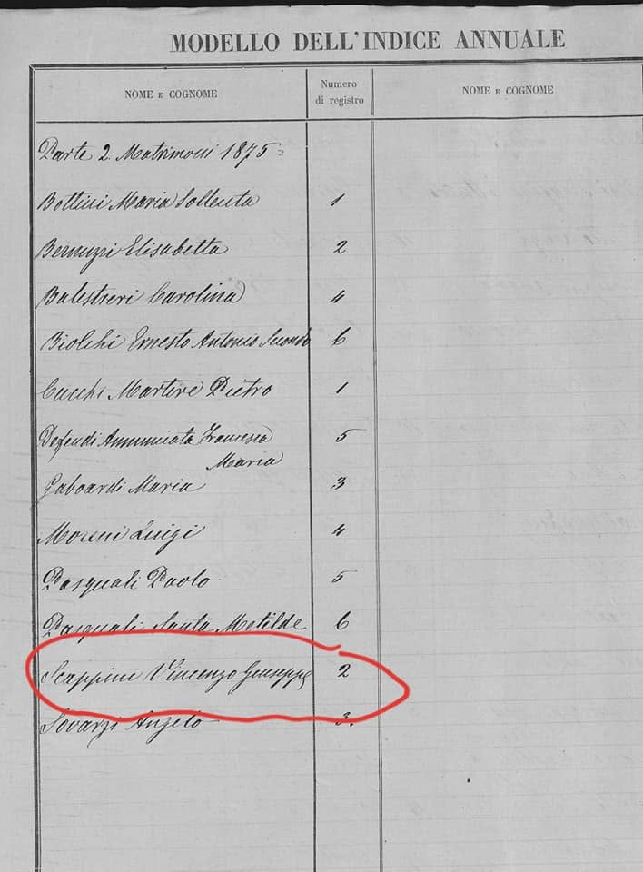
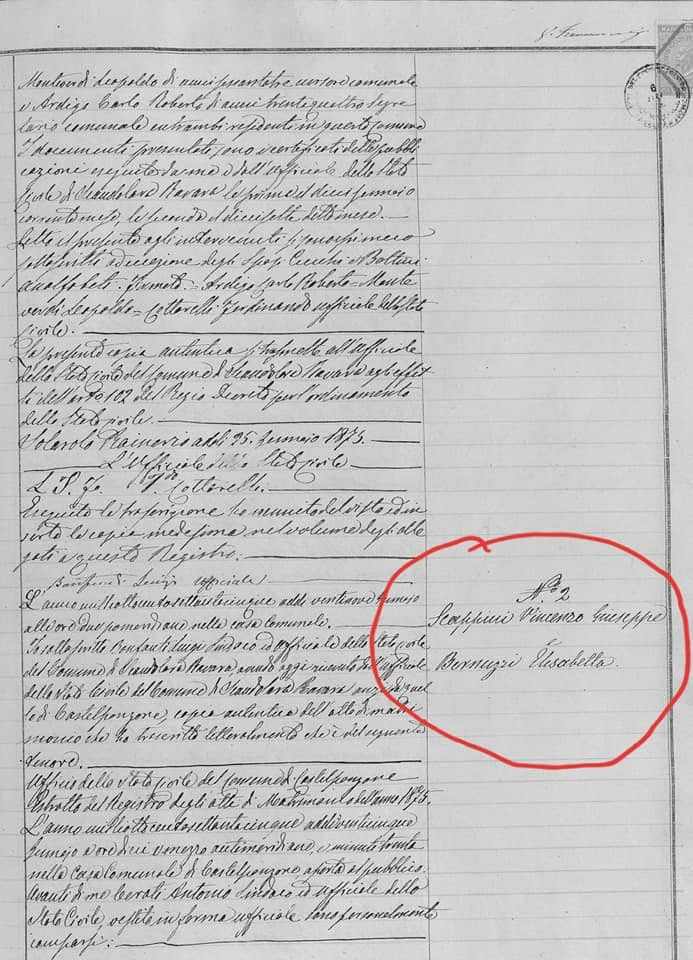
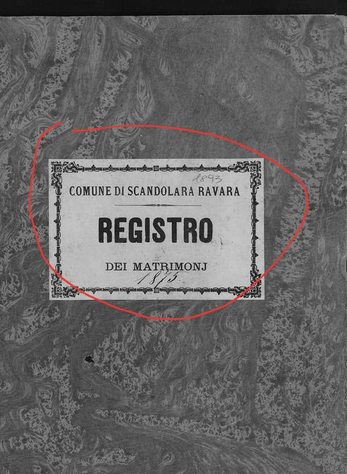
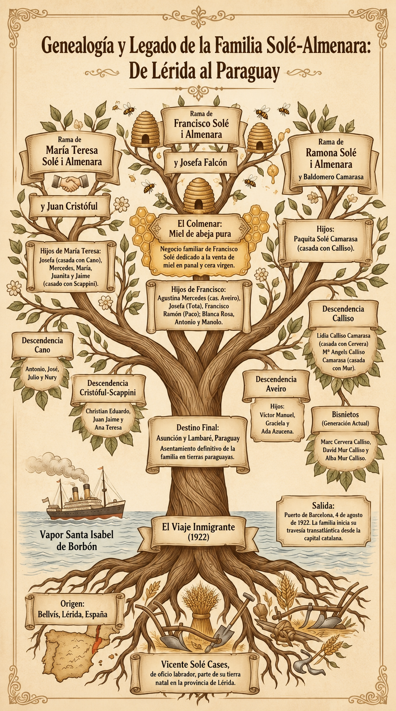
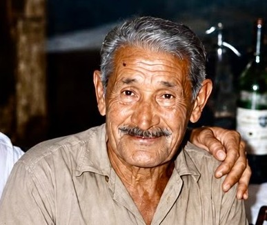
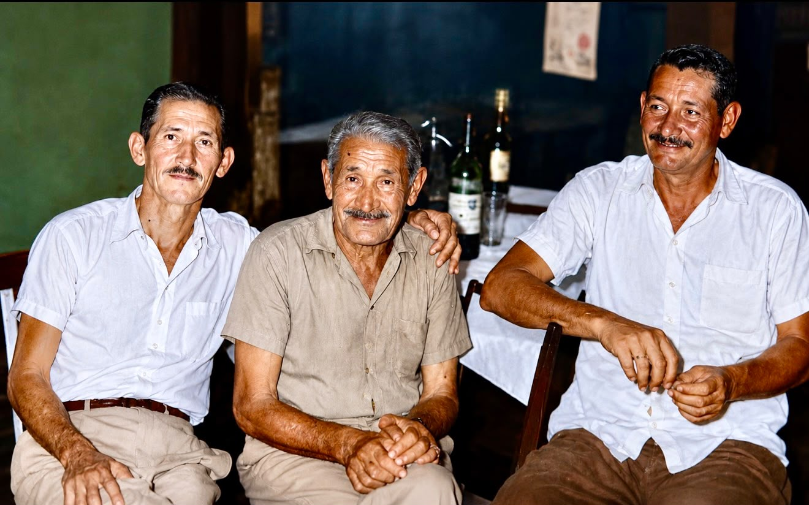
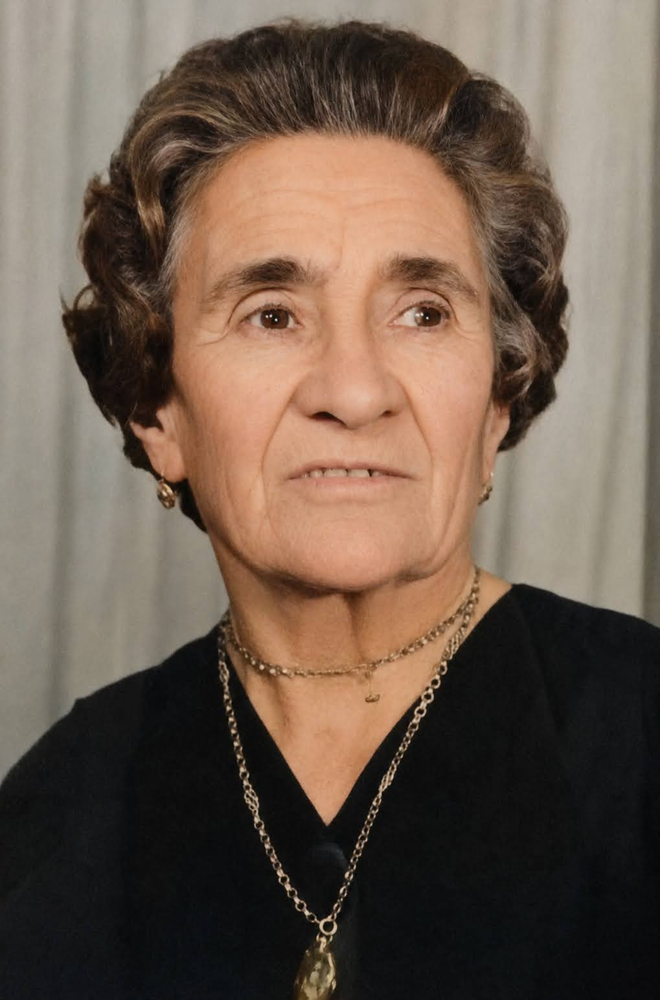
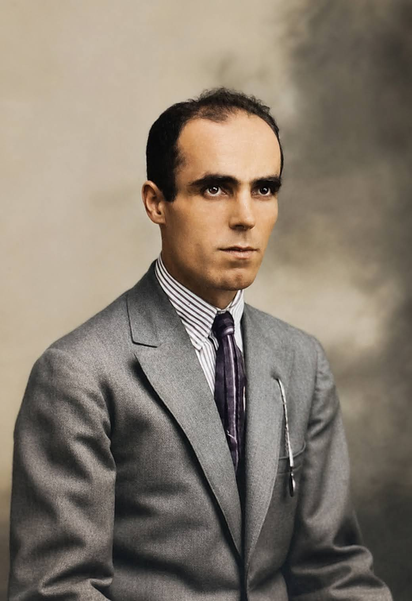

Viajes de los Inmigrantes:
Las historias de mi familia
Explora las raíces de las dos ramas de nuestra historia familiar.
Explora las raíces de las dos ramas de nuestra historia familiar.
Archivo histórico de la familia Scappini Bernuzzi.
Un homenaje a quienes cruzaron el océano.
Registro de Matrimonio de Vincenzo Giuseppe Scappini y Elizabetta Bernuzzi en Scandolara Ravara, Italia (1875).



Nuestra historia comienza con Vincenzo Giuseppe Scappini Ferrari (nacido el 25 de enero de 1842) y Elizabetta Bernuzzi Bottini (nacida el 5 de marzo de 1853). Se casaron el 25 de enero de 1875. Vincenzo era oriundo de San Martino Del Lago (era uno de 7 hermanos) y Elizabetta de Scandolara Rabara (una de 5 hermanos).
Huyendo de la gran hambruna que azotaba Europa, el matrimonio, junto a parientes y vecinos, abordó las grandes barcazas enviadas por el Imperio Brasileño. Desembarcaron en Río Grande do Sul (Brasil). Fue allí donde sus apellidos fueron registrados tal como los oía el oficial. Por descontento con las condiciones, muchos italianos se desplazaron hacia distintos territorios. Siguiendo las vías del tren, se establecieron finalmente en Yegros, Paraguay.
Vincenzo y Elizabetta tuvieron 8 hijos vivos. El único que nació en Italia fue el mayor, Pablo.
Scappini González
Cortessi Scappini
Scappini Valdez
Rienzzi Scappini
Scappini Scurra & Larrosa
Scappini Sarubbi
Scappini Rodríguez
Núñez Scappini
La representación visual del legado de la familia Scappini Bernuzzi.

Un homenaje a nuestras raíces catalanas y paraguayas.
Esta rama de la familia tiene sus raíces en el matrimonio de Vicente Solé Cases (natural de Bellvís, Lérida) y Josefa Almenara i Molló. De su unión nacieron 3 hijos: Teresa Solé y Almenara (la hermana mayor), Francisco Solé y Almenara y Ramona Solé y Almenara.
En un viaje documentado, el 20 de julio de 1922, Vicente Solé Cases compareció ante el juzgado de Bellvís para obtener el permiso necesario para que sus hijos mayores, Teresa (de 20 años) y Francisco (de 19 años), pudieran trasladarse a Sudamérica. Teresa, la hermana mayor, y Francisco se radicaron en Paraguay, mientras que Ramona residió en Bellvís.
El padre Vicente Solé era un viajero incansable. Testimonios documentan sus travesías en el vapor "Santa Isabel de Borbón", viajando de ida y vuelta entre España y Paraguay para visitar a sus hijos.
Primera hija (hermana mayor)
Segundo hijo
Tercera hija
La representación visual del legado de la familia Solé Almenara.


Nacimiento: 1879 (Italia) | Fallecimiento: 1962
Cónyuge: Escolástica González
Hijos (12): Información aún en recopilación. Una de sus hijas fue Irvina Scappini González (la hija menor).

Nacimiento: 1880, Garibaldi, Río Grande do Sul, Brasil
Cónyuge: "José" Giuseppe Giovanni Cortesi Giondini
Hijos (11):
[Escribe la historia de Rosa]



Nacimiento: Nació en el barco durante la travesía desde Italia. Fue registrado en Garibaldi, Río Grande do Sul, Brasil.
Cónyuge: Anselma Valdez
Historia: Su familia continuó el viaje hasta establecerse en Yegros, Paraguay. Su esposa, Anselma Valdez, falleció cuando su hijo Eligio tenía 15 años. Falleció en 1970 a los 89 años.

Cónyuge: Alfonso Rienzzi Grande (Ypacaraí, Paraguay)
Hijos: 5 hijos. Falleció muy joven.
[Escribe la historia de Genoveva]

1er Cónyuge: Justina Scurra (6 hijos)
2do Cónyuge: Albertina Larrosa (10 hijos)
[Escribe la historia de José Yelindo]

Nacimiento: 1889, Garibaldi, Brasil
Fallecimiento: 1938, Caazapá, Paraguay
Cónyuge: Teresa Sarubbi Spaltra (fallecida el 17 de julio de 1977 en Asunción)
Hijos: 7 hijos (Asunción, Eladio, Silvio, Agustín, Ovidio Ignacio, Lidia, Selva).

Cónyuge: Ernesta Rodríguez Sosa
Hijos: 9 hijos vivos.
[Escribe la historia de Alberto]

Cónyuge: Basilicio Núñez
Hijos: 1 hijo (Alicio Núñez, falleció joven).
[Escribe la historia de Francisca]


Origen: Bellvís, Lérida, España.
Esposo: Juan Cristóful Ricart (Gironella, España). Contrajo matrimonio el 14 de marzo de 1925 en Asunción.
Hijos (5):